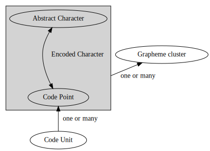

为什么编程语言总是应该使用UTF-8而不是UTF-16
1前段时间研究字符编码的时候，看到了一个知乎问题，里面的回答基本上都概念不清，事实上，Unicode “字符”、 “字符串”、“编码”等词语涉及到非常复杂的概念。而目前介绍这个主题的中文文章似乎较为稀少，于是有了这篇文章。
本文不仅讨论 UTF-8 与 UTF-16 ，还涉及了 Unicode 编码在应用于编程语言中的许多方面。我会尽量在保证准性的情况下，使文章简短，易懂。但我不是字符编码方面的专家，如果有遗漏错误之处，敬请在评论区中指出。
Unicode 的字符概念是怎样构建的
抽象字符 (Abstract character)
一个用于组织、控制或表示文字数据的信息单元。例如，英文字母表的第一个大 写字母是一个抽象字符，它可以用“A”或“𝑨”表示，但它不是“a”或“B”。任何人能想到的字符，都 是抽象字符。例如， 精灵语 tengwar 里的字母 ungwe 是一个抽象的字符，虽 然它尚不能用 Unicode 表示。
码位 (Code point)
Unicode 编码空间的任何数值。例如 U+3243F。
抽象字符是 Unicode 编码的起点。建立抽象字符与码位的映射，就是编码的过程。
已编码字符 (Encoded character)
码位和抽象字符之间的映射。例如，U+1F428 是一个代表抽象字符 🐨 考拉的已编码字符。
但需要注意这种映射是既不是双射，也不是单射，更不是满射：
- 代理字符 (surrogate)，非字符 (noncharacter) 和未分配的码位完全不对应抽象字符。
- 一些抽象字符可以由不同的码位进行编码；
U+03A9 希腊大写字母 Omega和U+2126 欧姆符号都对应于同一个抽象字符“Ω”，必须同等对待。 - 一些抽象字符无法用单个码位进行编码，要用已编码字符的序列才能表示它们。例如，表示抽象字符“ю́ 带锐音符的西里尔小写字母 yu”的唯一方法是使用 <
U+044E 西里尔小写字母 yu,U+0301 组合锐音符> 这个序列。
此外，一些抽象字符不仅有单码位表示方法，还有多码位表示方法。抽象字符 ǵ
可以用单一码位 U+01F5 带锐音符的拉丁小写字母 g 编码，或者用 <U+0067 拉丁小写字母 g, U+0301 组合锐音符> 这个序列。
Unicode 之所以要做如此复杂的规定，是因为世界各国的文字系统迥异，直接建立抽象字符到码位的一一映射是不切实际的。而且仅仅编制了码位仍然不够，例如，在 Unicode 中规定了由一或若干个码位构成的字素群的概念：
字素群 (Grapheme cluster)
“应该放在一起”的已编码的文本。例如它们可适用于光标移动和选择。
然后每一个码位又会在计算机中表示为若干个编码单元。
编码单元 (Code Unit)
可以表示一段已编码文本的最小比特组合。例如，UTF-8、UTF-16 和 UTF-32 分 别使用 8 比特、16 比特和 32 比特编码单元。比如文本“
💣”（U+1F4A3）可 以编码成四个 UTF-8 编码单元“f0 9f 92 a3”，两个 UTF-16 编码单元“3dd8 a3dc”，一个 UTF-32 编码单元“0001f4a3”。
这些概念的层次结构如下图所示： 
此外还有用户观感字符 (User-perceived character)与字模 (Glyph)等。但与日常编程关系不大。
编程语言中的实现
字符上节提到的概念都可以是“字符”。所以不同的编程语言对此的处理不尽相同，例如，C#当中的char类型表示一个 UTF-16 编码单元，而 Rust 的 char 类型则表示一个 Unicode 标量
（Unicode Scalar Value，代理字符以外的所有码位）。C/C++ 中的 char 类型只表示一个固定长度的整型数据。Go 中的字符表示一个
码位，为了突出这一性质，它甚至起了一个专门的名字 rune 来表示字符。
字符串字符串的编码一般采用 UTF-8 或 UTF-16 实现，采用 UTF-16 编码的语言的索引操作一般返回 编码单元。（而不是大多数人预想中的“字符”概念）
但 Python3 比较特殊，它严格区分了“文本”和“数据”，一个str类型并不与特定的编码相关联，而是一个由码位构成的序列。1
这样就可以保证s[i]总是返回正确的 第i个 码位，而
len(s)总是返回正确的码位个数。
编程语言应当如何支持 Unicode
字符的意义
字符类型在几乎所有编程语言中都是一个基本类型，一般可以对其进行语义上的操作，例如判断是否为大写字母等。从这个意义上讲，让一个字符变量储存一个编码单元的方案，在逻辑上是不正确的，因为编码单元只是一个和编码相关的概念，并不代表实际的字符。
同时，如果一个语言使用字符表示编码单元，又使用了 UTF-16 编码 （不幸的是， C# 就是这样的语言），那么它的字符将有可能存放损坏的 Unicode 数据。而如果使字符表示一个 码位 （或 标量），则没有这个问题。
字符串需要具有什么功能
前面提到，Python3 通过专门的设计，保证了对字符串中码位的正确计数和索引。但对码位进行正确计数的操作，在国际化的语境下，几乎没有用处，例如文本
Приве́т नमस्ते שָׁלוֹם
2中包含了 22 个码位，但“22”这个数字几乎没有任何用处。相反，这些可能会有用：
- 字素群个数：16。如果你尝试用鼠标选择这个文本，就能感受到。
- 编码长度。在 UTF-8 下，这个值是 48byte。
- 屏幕上显示的 宽度。这由所使用的字体决定。
结论
为什么 UTF-8 不比 UTF-16 差
- UTF-8 字符串的索引不一定能返回正确的码位， 但 UTF-16 字符串也不能。而且使用 UTF-8 的语言往往注意到了这一点。
- 由于大量纯 ASCII 控制字符（HTML，配置文件等）的存在，UTF-16 在储存空间上并没有什么优势。
- 变长字符编码对常用的操作并没有什么影响。每一个非 ASCII 字符在 UTF-8 中的编码下，每个字节的值都大于 127，而一个码位编码的起始字节永远不会与其他码位的尾随字节相同。这意味着搜索操作可以以和 ASCII 完全相同的方式进行。3
为什么 UTF-8 比 UTF-16 好
- UTF-8 完全兼容 ASCII，正如上一节第 3 点所说的那样。
- UTF-8 没有字节序的问题。
另外，使用 UTF-8 的语言（如 Rust 和 Go）比其他语言更多的注意到了 Unicode 相关的细节。使用 UTF-8，你的程序将能够更能轻松适应世界各国人民输入的各种文本而不至于使程序出错。
总之，UTF-8 具有各种好处，而人们长期以来认为 UTF-16 具有的好处都不成立。
Footnotes
本文大量参考了《UTF-8 遍地开花》。
虽然文档中没有说明，但可以由此推测 Python 内部字符串编码是 UTF-32。
这是一个相当复杂的文本，包含了 Combining character，RTL文本等中国人不熟悉，但在某些地区常见的元素。
在 Linux 下运行命令man utf-8就可以获得简明的关于 UTF-8 编码的描述。

为什么编程语言总是应该使用UTF-8而不是UTF-16 由 Peng Guanwen 采用 知识共享 署名-非商业性使用-相同方式共享 4.0 国际 许可协议进行许可。